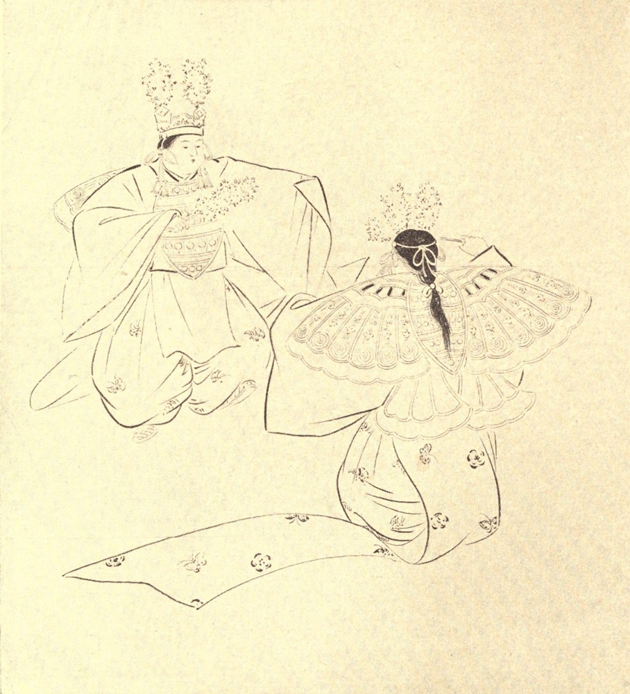

Chapter 18: Butterflies¶
18.1 I¶
Would that I could hope for the luck of that Chinese scholar known to Japanese literature as “Rōsan”! For he was beloved by two spirit-maidens, celestial sisters, who every ten days came to visit him and to tell him stories about butterflies. Now there are marvelous Chinese stories about butterflies—ghostly stories; and I want to know them. But never shall I be able to read Chinese, nor even Japanese; and the little Japanese poetry that I manage, with exceeding difficulty, to translate, contains so many allusions to Chinese stories of butterflies that I am tormented with the torment of Tantalus... And, of course, no spirit-maidens will even deign to visit so skeptical a person as myself.
I want to know, for example, the whole story of that Chinese maiden whom the butterflies took to be a flower, and followed in multitude,—so fragrant and so fair was she. Also I should like to know something more concerning the butterflies of the Emperor Gensō, or Ming Hwang, who made them choose his loves for him... He used to hold wine-parties in his amazing garden; and ladies of exceeding beauty were in attendance; and caged butterflies, set free among them, would fly to the fairest; and then, upon that fairest the Imperial favor was bestowed. But after Gensō Kōtei had seen Yōkihi (whom the Chinese call Yang-Kwei-Fei), he would not suffer the butterflies to choose for him,—which was unlucky, as Yokihi got him into serious trouble... Again, I should like to know more about the experience of that Chinese scholar, celebrated in Japan under the name Sōshū, who dreamed that he was a butterfly, and had all the sensations of a butterfly in that dream. For his spirit had really been wandering about in the shape of a butterfly; and, when he awoke, the memories and the feelings of butterfly existence remained so vivid in his mind that he could not act like a human being... Finally I should like to know the text of a certain Chinese official recognition of sundry butterflies as the spirits of an Emperor and of his attendants...
Most of the Japanese literature about butterflies, excepting some poetry, appears to be of Chinese origin; and even that old national aæsthetic feeling on the subject, which found such delightful expression in Japanese art and song and custom, may have been first developed under Chinese teaching. Chinese precedent doubtless explains why Japanese poets and painters chose so often for their geimyō, or professional appellations, such names as Chōmu (“Butterfly-Dream),” Ichō (“Solitary Butterfly),” etc. And even to this day such geimyō as Chōhana (“Butterfly-Blossom”), Chōkichi (“Butterfly-Luck”), or Chōnosuké (“Butterfly-Help”), are affected by dancing-girls. Besides artistic names having reference to butterflies, there are still in use real personal names (yobina) of this kind,—such as Kochō, or Chō, meaning “Butterfly.” They are borne by women only, as a rule,—though there are some strange exceptions... And here I may mention that, in the province of Mutsu, there still exists the curious old custom of calling the youngest daughter in a family Tekona,—which quaint word, obsolete elsewhere, signifies in Mutsu dialect a butterfly. In classic time this word signified also a beautiful woman...
It is possible also that some weird Japanese beliefs about butterflies are of Chinese derivation; but these beliefs might be older than China herself. The most interesting one, I think, is that the soul of a living person may wander about in the form of a butterfly. Some pretty fancies have been evolved out of this belief,—such as the notion that if a butterfly enters your guest-room and perches behind the bamboo screen, the person whom you most love is coming to see you. That a butterfly may be the spirit of somebody is not a reason for being afraid of it. Nevertheless there are times when even butterflies can inspire fear by appearing in prodigious numbers; and Japanese history records such an event. When Taïra-no-Masakado was secretly preparing for his famous revolt, there appeared in Kyōto so vast a swarm of butterflies that the people were frightened,—thinking the apparition to be a portent of coming evil... Perhaps those butterflies were supposed to be the spirits of the thousands doomed to perish in battle, and agitated on the eve of war by some mysterious premonition of death.
However, in Japanese belief, a butterfly may be the soul of a dead person as well as of a living person. Indeed it is a custom of souls to take butterfly-shape in order to announce the fact of their final departure from the body; and for this reason any butterfly which enters a house ought to be kindly treated.
To this belief, and to queer fancies connected with it, there are many allusions in popular drama. For example, there is a well-known play called Tondé-déru-Kochō-no-Kanzashi; or, “The Flying Hairpin of Kochō.” Kochō is a beautiful person who kills herself because of false accusations and cruel treatment. Her would-be avenger long seeks in vain for the author of the wrong. But at last the dead woman’s hairpin turns into a butterfly, and serves as a guide to vengeance by hovering above the place where the villain is hiding.
—Of course those big paper butterflies (o-chō and mé-chō) which figure at weddings must not be thought of as having any ghostly signification. As emblems they only express the joy of living union, and the hope that the newly married couple may pass through life together as a pair of butterflies flit lightly through some pleasant garden,—now hovering upward, now downward, but never widely separating.
18.2 II¶
A small selection of hokku (1) on butterflies will help to illustrate Japanese interest in the aæsthetic side of the subject. Some are pictures only,—tiny color-sketches made with seventeen syllables; some are nothing more than pretty fancies, or graceful suggestions;—but the reader will find variety. Probably he will not care much for the verses in themselves. The taste for Japanese poetry of the epigrammatic sort is a taste that must be slowly acquired; and it is only by degrees, after patient study, that the possibilities of such composition can be fairly estimated. Hasty criticism has declared that to put forward any serious claim on behalf of seventeen-syllable poems “would be absurd.” But what, then, of Crashaw’s famous line upon the miracle at the marriage feast in Cana?—
Nympha pudica Deum vidit, et erubuit.1
Only fourteen syllables—and immortality. Now with seventeen Japanese syllables things quite as wonderful—indeed, much more wonderful—have been done, not once or twice, but probably a thousand times... However, there is nothing wonderful in the following hokku, which have been selected for more than literary reasons:—
Nugi-kakuru2
Haori sugata no
Kochō kana!
[Like a haori being taken off—that is the shape of a butterfly!]
Torisashi no
Sao no jama suru
Kochō kana!
[Ah, the butterfly keeps getting in the way of the bird-catcher’s pole!3]
Tsurigané ni
Tomarité nemuru
Kochō kana!
[Perched upon the temple-bell, the butterfly sleeps:]
Néru-uchi mo
Asobu-yumé wo ya—
Kusa no chō!
[Even while sleeping, its dream is of play—ah, the butterfly of the grass!4
Oki, oki yo!
Waga tomo ni sen,
Néru-kochō!
[Wake up! wake up!—I will make thee my comrade, thou sleeping butterfly.5]
Kago no tori
Chō wo urayamu
Metsuki kana!
[Ah, the sad expression in the eyes of that caged bird!—envying the butterfly!]
Chō tondé—
Kazé naki hi to mo
Miëzari ki!
[Even though it did not appear to be a windy day,6 the fluttering of the butterflies—!]
Rakkwa éda ni
Kaëru to miréba—
Kochō kana!
[When I saw the fallen flower return to the branch—lo! it was only a butterfly!7]
Chiru-hana ni—
Karusa arasoü
Kochō kana!
[How the butterfly strives to compete in lightness with the falling flowers!8]
Chōchō ya!
Onna no michi no
Ato ya saki!
[See that butterfly on the woman’s path,—now fluttering behind her, now before!]
Chōchō ya!
Hana-nusubito wo
Tsukété-yuku!
[Ha! the butterfly!—it is following the person who stole the flowers!]
Aki no chō
Tomo nakéréba ya;
Hito ni tsuku
[Poor autumn butterfly!—when left without a comrade (of its own race), it follows after man (or “a person”)!]
Owarété mo,
Isoganu furi no
Chōcho kana!
[Ah, the butterfly! Even when chased, it never has the air of being in a hurry.]
Chō wa mina
Jiu-shichi-hachi no
Sugata kana!
[As for butterflies, they all have the appearance of being about seventeen or eighteen years old.9]
Chō tobu ya—
Kono yo no urami
Naki yō ni!
[How the butterfly sports,—just as if there were no enmity (or “envy”) in this world!]
Chō tobu ya,
Kono yo ni nozomi
Nai yō ni!
[Ah, the butterfly!—it sports about as if it had nothing more to desire in this present state of existence.]
Nami no hana ni
Tomari kanétaru,
Kochō kana!
[Having found it difficult indeed to perch upon the (foam-) blossoms of the waves,—alas for the butterfly!]
Mutsumashi ya!—
Umaré-kawareba
Nobé no chō.10
[If (in our next existence) we be born into the state of butterflies upon the moor, then perchance we may be happy together!]
Nadéshiko ni
Chōchō shiroshi—
Taré no kon?11
[On the pink-flower there is a white butterfly: whose spirit, I wonder?]
Ichi-nichi no
Tsuma to miëkéri—
Chō futatsu.
[The one-day wife has at last appeared—a pair of butterflies!]
Kité wa maü,
Futari shidzuka no
Kochō kana!
[Approaching they dance; but when the two meet at last they are very quiet, the butterflies!]
Chō wo oü
Kokoro-mochitashi
Itsumadémo!
[Would that I might always have the heart (desire) of chasing butterflies!12]
Besides these specimens of poetry about butterflies, I have one queer example to offer of Japanese prose literature on the same topic. The original, of which I have attempted only a free translation, can be found in the curious old book Mushi-Isamé (“Insect-Admonitions”); and it assumes the form of a discourse to a butterfly. But it is really a didactic allegory,—suggesting the moral significance of a social rise and fall:—
“Now, under the sun of spring, the winds are gentle, and flowers pinkly bloom, and grasses are soft, and the hearts of people are glad. Butterflies everywhere flutter joyously: so many persons now compose Chinese verses and Japanese verses about butterflies.
“And this season, O Butterfly, is indeed the season of your bright prosperity: so comely you now are that in the whole world there is nothing more comely. For that reason all other insects admire and envy you;—there is not among them even one that does not envy you. Nor do insects alone regard you with envy: men also both envy and admire you. Sōshū of China, in a dream, assumed your shape;—Sakoku of Japan, after dying, took your form, and therein made ghostly apparition. Nor is the envy that you inspire shared only by insects and mankind: even things without soul change their form into yours;—witness the barley-grass, which turns into a butterfly.13
“And therefore you are lifted up with pride, and think to yourself: ‘In all this world there is nothing superior to me!’ Ah! I can very well guess what is in your heart: you are too much satisfied with your own person. That is why you let yourself be blown thus lightly about by every wind;—that is why you never remain still,—always, always thinking, ‘In the whole world there is no one so fortunate as I.’
“But now try to think a little about your own personal history. It is worth recalling; for there is a vulgar side to it. How a vulgar side? Well, for a considerable time after you were born, you had no such reason for rejoicing in your form. You were then a mere cabbage-insect, a hairy worm; and you were so poor that you could not afford even one robe to cover your nakedness; and your appearance was altogether disgusting. Everybody in those days hated the sight of you. Indeed you had good reason to be ashamed of yourself; and so ashamed you were that you collected old twigs and rubbish to hide in, and you made a hiding-nest, and hung it to a branch,—and then everybody cried out to you, ‘Raincoat Insect!’ (Mino-mushi.)14 And during that period of your life, your sins were grievous. Among the tender green leaves of beautiful cherry-trees you and your fellows assembled, and there made ugliness extraordinary; and the expectant eyes of the people, who came from far away to admire the beauty of those cherry-trees, were hurt by the sight of you. And of things even more hateful than this you were guilty. You knew that poor, poor men and women had been cultivating daikon (2) in their fields,—toiling under the hot sun till their hearts were filled with bitterness by reason of having to care for that daikon; and you persuaded your companions to go with you, and to gather upon the leaves of that daikon, and on the leaves of other vegetables planted by those poor people. Out of your greediness you ravaged those leaves, and gnawed them into all shapes of ugliness,—caring nothing for the trouble of those poor folk... Yes, such a creature you were, and such were your doings.
“And now that you have a comely form, you despise your old comrades, the insects; and, whenever you happen to meet any of them, you pretend not to know them [literally, ‘You make an I-don’t-know face’]. Now you want to have none but wealthy and exalted people for friends... Ah! You have forgotten the old times, have you?
“It is true that many people have forgotten your past, and are charmed by the sight of your present graceful shape and white wings, and write Chinese verses and Japanese verses about you. The high-born damsel, who could not bear even to look at you in your former shape, now gazes at you with delight, and wants you to perch upon her hairpin, and holds out her dainty fan in the hope that you will light upon it. But this reminds me that there is an ancient Chinese story about you, which is not pretty.
“In the time of the Emperor Gensō, the Imperial Palace contained hundreds and thousands of beautiful ladies,—so many, indeed, that it would have been difficult for any man to decide which among them was the loveliest. So all of those beautiful persons were assembled together in one place; and you were set free to fly among them; and it was decreed that the damsel upon whose hairpin you perched should be augustly summoned to the Imperial Chamber. In that time there could not be more than one Empress—which was a good law; but, because of you, the Emperor Gensō did great mischief in the land. For your mind is light and frivolous; and although among so many beautiful women there must have been some persons of pure heart, you would look for nothing but beauty, and so betook yourself to the person most beautiful in outward appearance. Therefore many of the female attendants ceased altogether to think about the right way of women, and began to study how to make themselves appear splendid in the eyes of men. And the end of it was that the Emperor Gensō died a pitiful and painful death—all because of your light and trifling mind. Indeed, your real character can easily be seen from your conduct in other matters. There are trees, for example,—such as the evergreen-oak and the pine,—whose leaves do not fade and fall, but remain always green;—these are trees of firm heart, trees of solid character. But you say that they are stiff and formal; and you hate the sight of them, and never pay them a visit. Only to the cherry-tree, and the kaido15, and the peony, and the yellow rose you go: those you like because they have showy flowers, and you try only to please them. Such conduct, let me assure you, is very unbecoming. Those trees certainly have handsome flowers; but hunger-satisfying fruits they have not; and they are grateful to those only who are fond of luxury and show. And that is just the reason why they are pleased by your fluttering wings and delicate shape;—that is why they are kind to you.
“Now, in this spring season, while you sportively dance through the gardens of the wealthy, or hover among the beautiful alleys of cherry-trees in blossom, you say to yourself: ‘Nobody in the world has such pleasure as I, or such excellent friends. And, in spite of all that people may say, I most love the peony,—and the golden yellow rose is my own darling, and I will obey her every least behest; for that is my pride and my delight.’... So you say. But the opulent and elegant season of flowers is very short: soon they will fade and fall. Then, in the time of summer heat, there will be green leaves only; and presently the winds of autumn will blow, when even the leaves themselves will shower down like rain, parari-parari. And your fate will then be as the fate of the unlucky in the proverb, Tanomi ki no shita ni amé furu [Even through the tree upon which I relied for shelter the rain leaks down]. For you will seek out your old friend, the root-cutting insect, the grub, and beg him to let you return into your old-time hole;—but now having wings, you will not be able to enter the hole because of them, and you will not be able to shelter your body anywhere between heaven and earth, and all the moor-grass will then have withered, and you will not have even one drop of dew with which to moisten your tongue,—and there will be nothing left for you to do but to lie down and die. All because of your light and frivolous heart—but, ah! how lamentable an end!”...
18.3 III¶
Most of the Japanese stories about butterflies appear, as I have said, to be of Chinese origin. But I have one which is probably indigenous; and it seems to me worth telling for the benefit of persons who believe there is no “romantic love” in the Far East.
Behind the cemetery of the temple of Sōzanji, in the suburbs of the capital, there long stood a solitary cottage, occupied by an old man named Takahama. He was liked in the neighborhood, by reason of his amiable ways; but almost everybody supposed him to be a little mad. Unless a man take the Buddhist vows, he is expected to marry, and to bring up a family. But Takahama did not belong to the religious life; and he could not be persuaded to marry. Neither had he ever been known to enter into a love-relation with any woman. For more than fifty years he had lived entirely alone.
One summer he fell sick, and knew that he had not long to live. He then sent for his sister-in-law, a widow, and for her only son,—a lad of about twenty years old, to whom he was much attached. Both promptly came, and did whatever they could to soothe the old man’s last hours.
One sultry afternoon, while the widow and her son were watching at his bedside, Takahama fell asleep. At the same moment a very large white butterfly entered the room, and perched upon the sick man’s pillow. The nephew drove it away with a fan; but it returned immediately to the pillow, and was again driven away, only to come back a third time. Then the nephew chased it into the garden, and across the garden, through an open gate, into the cemetery of the neighboring temple. But it continued to flutter before him as if unwilling to be driven further, and acted so queerly that he began to wonder whether it was really a butterfly, or a ma16. He again chased it, and followed it far into the cemetery, until he saw it fly against a tomb,—a woman’s tomb. There it unaccountably disappeared; and he searched for it in vain. He then examined the monument. It bore the personal name “Akiko,” (3) together with an unfamiliar family name, and an inscription stating that Akiko had died at the age of eighteen. Apparently the tomb had been erected about fifty years previously: moss had begun to gather upon it. But it had been well cared for: there were fresh flowers before it; and the water-tank had recently been filled.
On returning to the sick room, the young man was shocked by the announcement that his uncle had ceased to breathe. Death had come to the sleeper painlessly; and the dead face smiled.
The young man told his mother of what he had seen in the cemetery.
“Ah!” exclaimed the widow, “then it must have been Akiko!”...
“But who was Akiko, mother?” the nephew asked.
The widow answered:—
“When your good uncle was young he was betrothed to a charming girl called Akiko, the daughter of a neighbor. Akiko died of consumption, only a little before the day appointed for the wedding; and her promised husband sorrowed greatly. After Akiko had been buried, he made a vow never to marry; and he built this little house beside the cemetery, so that he might be always near her grave. All this happened more than fifty years ago. And every day of those fifty years—winter and summer alike—your uncle went to the cemetery, and prayed at the grave, and swept the tomb, and set offerings before it. But he did not like to have any mention made of the matter; and he never spoke of it... So, at last, Akiko came for him: the white butterfly was her soul.”
18.4 IV¶
I had almost forgotten to mention an ancient Japanese dance, called the Butterfly Dance (Kochō-Mai), which used to be performed in the Imperial Palace, by dancers costumed as butterflies. Whether it is danced occasionally nowadays I do not know. It is said to be very difficult to learn. Six dancers are required for the proper performance of it; and they must move in particular figures,—obeying traditional rules for every step, pose, or gesture,—and circling about each other very slowly to the sound of hand-drums and great drums, small flutes and great flutes, and pandean pipes of a form unknown to Western Pan.

-
“The modest nymph beheld her God, and blushed.” (Or, in a more familiar rendering: “The modest water saw its God, and blushed.”) In this line the double value of the word nympha—used by classical poets both in the meaning of fountain and in that of the divinity of a fountain, or spring—reminds one of that graceful playing with words which Japanese poets practice. ↩
-
More usually written nugi-kakéru, which means either “to take off and hang up,” or “to begin to take off,”—as in the above poem. More loosely, but more effectively, the verses might thus be rendered: “Like a woman slipping off her haori—that is the appearance of a butterfly.” One must have seen the Japanese garment described, to appreciate the comparison. The haori is a silk upper-dress,—a kind of sleeved cloak,—worn by both sexes; but the poem suggests a woman’s haori, which is usually of richer color or material. The sleeves are wide; and the lining is usually of brightly-colored silk, often beautifully variegated. In taking off the haori, the brilliant lining is displayed,—and at such an instant the fluttering splendor might well be likened to the appearance of a butterfly in motion. ↩
-
The bird-catcher’s pole is smeared with bird-lime; and the verses suggest that the insect is preventing the man from using his pole, by persistently getting in the way of it,—as the birds might take warning from seeing the butterfly limed. Jama suru means “to hinder” or “prevent.” ↩
-
Even while it is resting, the wings of the butterfly may be seen to quiver at moments,—as if the creature were dreaming of flight. ↩
-
A little poem by Bashō, greatest of all Japanese composers of hokku. The verses are intended to suggest the joyous feeling of spring-time. ↩
-
Literally, “a windless day;” but two negatives in Japanese poetry do not necessarily imply an affirmative, as in English. The meaning is, that although there is no wind, the fluttering motion of the butterflies suggests, to the eyes at least, that a strong breeze is playing. ↩
-
Alluding to the Buddhist proverb: Rakkwa éda ni kaërazu; ha-kyō futatabi terasazu (“The fallen flower returns not to the branch; the broken mirror never again reflects.”) So says the proverb—yet it seemed to me that I saw a fallen flower return to the branch... No: it was only a butterfly. ↩
-
Alluding probably to the light fluttering motion of falling cherry-petals. ↩
-
That is to say, the grace of their motion makes one think of the grace of young girls, daintily costumed, in robes with long fluttering sleeves... And old Japanese proverb declares that even a devil is pretty at eighteen: Oni mo jiu-hachi azami no hana: “Even a devil at eighteen, flower-of-the-thistle.” ↩
-
Or perhaps the verses might be more effectively rendered thus: “Happy together, do you say? Yes—if we should be reborn as field-butterflies in some future life: then we might accord!” This poem was composed by the celebrated poet Issa, on the occasion of divorcing his wife. ↩
-
Or, Taré no tama? ↩
-
Literally, “Butterfly-pursuing heart I wish to have always;”—i.e., I would that I might always be able to find pleasure in simple things, like a happy child. ↩
-
An old popular error,—probably imported from China. ↩
-
A name suggested by the resemblance of the larva’s artificial covering to the mino, or straw-raincoat, worn by Japanese peasants. I am not sure whether the dictionary rendering, “basket-worm,” is quite correct;—but the larva commonly called minomushi does really construct for itself something much like the covering of the basket-worm. ↩
-
Pyrus spectabilis. ↩
-
An evil spirit. ↩